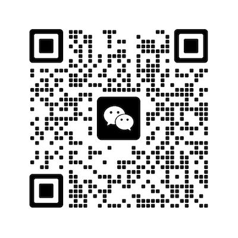

AI that WOKRS!
Build AI agents for business!
在 WorkBuddy 中安装需要的技能：
复制提示词并粘贴到 WorkBuddy 聊天窗口
自动安装有问题？下载技能包后手动安装
# 背景
云溪酒业（区域白酒厂商，主攻大众价位带，年营收约8亿）市场部需要每周掌握头部白酒企业的经营分化与行业动向，作为本品定价与渠道策略参考。现要求一个智能体在每周一09:00生成竞品对标周报并发送至指定邮箱：内容为贵州茅台、五粮液、泸州老窖、山西汾酒、洋河股份、古井贡酒六家的最近八个已披露报告期财务（营收、同比、净利、毛利率）、八个完整自然季度股价趋势，以及上周值得注意的行业动态与对本品的启示。
# 按照以下说明构建智能体 mkt-insights
步骤一：数据采集
- 财务与上市信息：qcc-company（企业信息MCP），get_financial_data 与 get_listing_info；searchKey 必须用完整注册名（如"山西杏花村汾酒厂股份有限公司"避免匹配失败）；
- 股价：公开行情接口取日K线，聚合成季末收盘价，前复权口径；取八个完整自然季度，首季涨跌以前一季末为基准；
- 行业动态：公开新闻检索，仅取带来源与日期的报道；
- 口径：财务取最近八个已披露报告期（A股按一季报/半年报/三季报/年报节奏披露，非自然季度）；金额保留原币原单位；当期未披露的留缺，不得用预测值填充；六家均为A股上市，无数据缺口，如遇退市、停牌、更名按当期公告更新竞对名单；
- 报道、机构预测、本品推断三类内容分开标注，不得混写。
步骤二：报表生成
- 所有统计数字从最终底稿计算；
- 周报固定七节：竞争格局（市值/PE）、八季度营收趋势、毛利率结构、八季度股价趋势（累计涨跌与个股-行业背离）、行业动态（带来源）、对本品的启示（标注为推断）、口径与合规声明；
- 产出：Excel 底表（指标+趋势+明细）、邮件正文版（样式内联，兼容各邮箱客户端与手机端）。
步骤三：邮件发送
- 正文即完整周报，附件仅 Excel 底表；
- 发送到指定邮箱：abc@xyz.com
- 发送前不须确认，直接发送。
步骤四：失败处理
- 停发条件：数据源不可达／任一竞对财务连续两期取数失败／行情接口连续失败／报表生成报错／收件地址校验失败；当周停发，不自动重试；
- 恢复后补发，邮件中注明补发。
# 背景
杭州禾一宠物食品有限公司（品牌"禾一"，烘焙猫粮）市场部需要每日掌握小红书竞品内容动态，作为内容策略与投放参考。现要求一个智能体在每个工作日早上生成竞品日报并发送至指定邮箱：内容为关键词"烘焙猫粮"与"烘焙粮"下互动量最高的10篇视频笔记（含点赞、收藏、评论与排名），另附2–3条当日值得注意的动向（如竞品账号进场、某类内容起量）。
# 按照以下说明构建智能体 rednote-daily-insights
步骤一：数据采集
- 数据源：xiaohongshu-mcp（免费开源工具），本账号登录态，只读访问；
- 依次搜索"烘焙猫粮""烘焙粮"，按笔记去重合并，筛出视频，按互动量（赞+藏+评+分享）取前10；不足10篇按实际数量发出；
- 热门口径＝固定关键词搜索排序（平台无热门榜）；关键词与取数时间固定，保证跨日可比；
- 阅读量、完播率平台不公开，无法获得，因此不采集；
- 登录态数周过期一次，需人工重新扫码；同账号不得在其他网页端登录；
- 每日1次、每次10篇以内；禁止批量高频采集。
步骤二：报表生成
- 所有统计数字从最终底稿计算；
- 产出：Excel 底表（指标+排行+明细）、邮件正文版（样式内联，兼容各邮箱客户端与手机端）。
步骤三：邮件发送
- 正文即完整日报，附件仅 Excel 底表；
- 发送到指定邮箱：abc@xyz.com
- 发送前不须确认，直接发送。
步骤四：失败处理
- 停发条件：数据源不可达／登录失效／搜索连续失败／报表生成报错／收件地址校验失败；当日停发，不自动重试；
- 恢复后补发，邮件中注明补发。

扫码加我微信